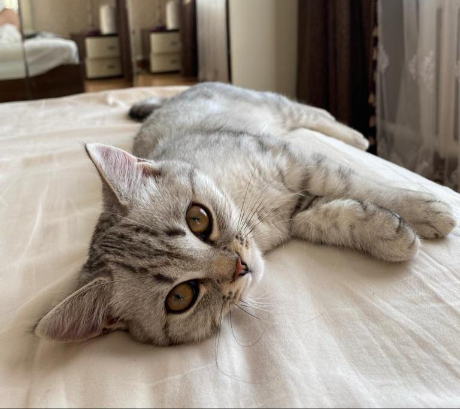

Описание
Кошка шотландская прямоухая короткошерстная получила свое признание благодаря, во-первых, своей внешности, которая напоминают медвежонка, во-вторых, неплохому характеру, который выгодно отличает ее от многих других пород. Плюс шотландские кошки просты в содержании. Это одна из самых удобных для квартиры пород.